CODING AGENTS AS PIXEL WORLD MODELS
traex/GPT-6.1-Sol · 0190
点击播放 · 原生 RGB 像素
逐轮保存的候选
回放视频、检查图与代码变化。
每份候选均可单独播放。实际图片检查记录在下方工具轨迹中。
候选 01播放与检查图
点击播放 · 原生 RGB 像素

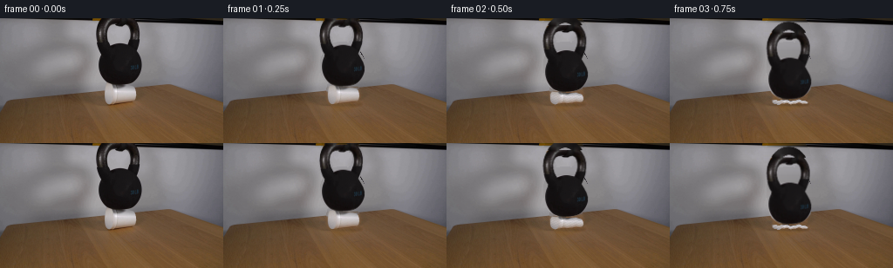
展开代码变化
--- 上一保存版本
+++ 本次保存版本
@@ -0,0 +1,134 @@
+from pathlib import Path
+import numpy as np
+from PIL import Image, ImageDraw, ImageFilter
+import cv2
+from scipy.ndimage import gaussian_filter
+import artifact_io
+
+ROOT=Path(__file__).resolve().parent
+W,H=256,144
+src=np.array(Image.open(ROOT/'first_frame.png').convert('RGB'))
+
+def polygon_mask(points, holes=()):
+ s=4
+ im=Image.new('L',(W*s,H*s))
+ d=ImageDraw.Draw(im)
+ d.polygon([(round(x*s),round(y*s)) for x,y in points],fill=255)
+ for points2 in holes:
+ d.polygon([(round(x*s),round(y*s)) for x,y in points2],fill=0)
+ return np.array(im.resize((W,H),Image.Resampling.LANCZOS)).astype(np.float32)/255
+
+# Silhouette contours traced from the sole supplied photographic frame.
+outer=[(118,-1),(152,-1),(155,3),(158,8),(159.7,14),(159.8,21),(158.8,28),(156.5,34),(154.5,39),(157.6,44),(160.2,49),(161.8,54),(162,60),(160.9,65),(158.1,69),(153.3,73),(148.4,75.3),(143,76.6),(131,76.9),(125.5,75.5),(120.9,73.1),(117,69.8),(114.2,65.3),(112.6,60),(112.3,54.7),(112.8,49.3),(114.2,44.2),(116.4,40.1),(114,36),(112.2,31),(110.7,25),(110.3,18),(110.9,11),(112.5,6),(115,1)]
+inner=[(128.3,7),(125,8.4),(122.8,12),(122,16.5),(122.2,21.5),(123.7,26),(125.4,29.9),(131,29),(137,28.4),(142.4,29.3),(146.2,29.8),(148.2,24.9),(149.3,20),(149.3,15),(148.4,11.2),(146.8,8.3),(144,6.6),(141.2,6.9),(138.4,8.5),(134,8.6),(130.2,7.8)]
+bell=polygon_mask(outer,[inner])
+cup_points=[(121.7,75.6),(127.9,76.1),(132,77.2),(145.7,77.9),(151.8,79.1),(154.2,81.3),(155.5,85.3),(155.7,89.8),(154.9,93.8),(153.1,96.1),(137,97.4),(130.4,98.3),(125.1,99.2),(122.4,98.2),(120.5,94.9),(119.6,90.3),(119.6,85),(120.3,80.1)]
+cup=polygon_mask(cup_points)
+
+# Recover only the background covered by the original apparatus, retaining the
+# exact source pixels everywhere else in this locked camera shot.
+occ=np.uint8(np.maximum(bell,cup)>0.02)*255
+occ=cv2.dilate(occ,np.ones((3,3),np.uint8),iterations=1)
+# Include the original small contact shadow below the cup.
+cv2.ellipse(occ,(140,98),(19,4),0,0,360,255,-1)
+bg=cv2.inpaint(src,occ,5,cv2.INPAINT_TELEA)
+# Use the observed wooden grain below the apparatus to continue the tabletop.
+yy,xx=np.mgrid[:H,:W].astype(np.float32)
+wood=cv2.remap(src,xx+5,yy+21,cv2.INTER_LINEAR,borderMode=cv2.BORDER_REFLECT_101)
+# Smooth blend at the patch's boundary, while keeping the back edge straight.
+fill=gaussian_filter((occ>0).astype(float),1.2)
+edge=94.5-(xx-12)*.098
+woodmix=fill*np.clip((yy-edge-.2)/2,0,1)
+bg=np.clip(bg*(1-woodmix[...,None])+wood*woodmix[...,None],0,255).astype(np.uint8)
+# The wall is smooth. Horizontal interpolation preserves its illumination and
+# avoids residual bell-coloured inpainting at the top of the opening.
+for y in range(0,84):
+ left=108; right=165
+ t=(np.arange(left,right+1)-left)/(right-left)
+ line=src[y,left,None,:]*(1-t[:,None])+src[y,right,None,:]*t[:,None]
+ for x in range(left,right+1):
+ if occ[y,x] and y<edge[y,x]-.8:
+ bg[y,x]=line[x-left]
+
+# Extend the few clipped pixels of the cast-iron handle above the photograph.
+PAD=14
+bh,bw=H+PAD,W
+bell_alpha=np.zeros((bh,bw),np.float32)
+bell_alpha[PAD:]=bell
+bell_rgb=np.zeros((bh,bw,3),np.float32)
+bell_rgb[PAD:]=src
+# The upper arc continues behind the frame edge: elliptic ring with iron
+# highlights matched to the visible side of the handle.
+Y,X=np.mgrid[-PAD:H,:W]
+q=((X-135.0)/24.4)**2+((Y-16.1)/29.4)**2
+qi=((X-135.3)/13.9)**2+((Y-17.0)/20.0)**2
+arc=(q<1)&(qi>1)&(Y<0)
+# Subpixel antialiased geometric top edge.
+bell_alpha[:PAD]=np.clip((1-q[:PAD])*32,0,1)*np.clip((qi[:PAD]-1)*20,0,1)
+shade=25+22*np.exp(-((X-122)/6)**2)+5*np.cos((X-132)*.22)
+for c,delta in enumerate([1,-1,-1]):
+ bell_rgb[:PAD,:,c]=(shade+delta)[:PAD]
+# Interpolate colour at the cut edge to reproduce the photographed patina.
+for j in range(PAD):
+ mix=np.clip((j-PAD+5)/5,0,1)
+ bell_rgb[j]=(1-mix)*bell_rgb[j]+mix*src[0]
+
+
+def composite(base,col,alpha):
+ return base*(1-alpha[...,None])+col*alpha[...,None]
+
+def render(t):
+ # Gravity buckles the cup's sidewall quickly; the resting rim is supported
+ # by the table. The heavy bell cannot rebound appreciably.
+ if t<=.25:
+ progress=.10*(t/.25)**2
+ elif t<.82:
+ u=(t-.25)/.57
+ progress=.10+.90*(u*u*(3-2*u))
+ else:
+ progress=1.0
+ squash=1-.80*progress
+ drop=21.5*(1-squash)
+ if t>.82:
+ drop+=.43*np.exp(-(t-.82)*6)*np.sin((t-.82)*17)
+ lean=0.65*progress
+ if t>.82:
+ lean+=.5*np.exp(-(t-.82)*4)*np.sin((t-.82)*12)
+ base=bg.astype(np.float32).copy()
+ # Soft contact occlusion, tightened under load rather than a floating shadow.
+ sh=np.exp(-((xx-(140+progress)) / (19+3*progress))**2-((yy-99.5)/(2.1-.5*progress))**2)
+ base*=1-(.11+.06*progress)*sh[...,None]
+ # Flattening is nonlinear across the cup: the upper wall buckles, the rim
+ # keeps contact, and the crumpled sides splay very slightly outwards.
+ cy=98.8; cx=137
+ spread=1+.15*progress
+ mx=cx+(xx-cx)/spread
+ ripple=progress*(.7*np.sin((xx-120)*.40)+.32*np.sin((xx-123)*.95))
+ my=cy+(yy-cy-ripple)/squash
+ ccol=cv2.remap(src.astype(np.float32),mx.astype(np.float32),my.astype(np.float32),cv2.INTER_LINEAR,borderMode=cv2.BORDER_CONSTANT)
+ ca=cv2.remap(cup,mx.astype(np.float32),my.astype(np.float32),cv2.INTER_LINEAR,borderMode=cv2.BORDER_CONSTANT)
+ # Light and shade on the new folds are modulated from the source foam,
+ # with narrow creases rather than a uniform scaled white strip.
+ crease=(np.sin((xx-120)*.56+(yy-95)*1.1)**10)*progress
+ ccol*=1-.10*crease[...,None]
+ base=composite(base,ccol,ca)
+ # A single rigid transform preserves the bell's original texture/label.
+ angle=np.deg2rad(lean)
+ co,si=np.cos(angle),np.sin(angle)
+ pivotx,pivoty=137,76.5
+ x1=xx-pivotx
+ y1=yy-(pivoty+drop)
+ bx=co*x1+si*y1+pivotx
+ by=-si*x1+co*y1+pivoty+PAD
+ a=cv2.remap(bell_alpha,bx.astype(np.float32),by.astype(np.float32),cv2.INTER_LINEAR,borderMode=cv2.BORDER_CONSTANT)
+ # Premultiply before filtering, avoiding coloured matte fringes.
+ prem=cv2.remap(bell_rgb*bell_alpha[...,None],bx.astype(np.float32),by.astype(np.float32),cv2.INTER_LINEAR,borderMode=cv2.BORDER_CONSTANT)
+ base=base*(1-a[...,None])+prem
+ return np.uint8(np.clip(np.round(base),0,255))
+
+frames=[src.copy()]
+for i in range(1,20):
+ frames.append(render(i/4))
+frames=np.stack(frames)
+artifact_io.save(frames,ROOT)
+Image.fromarray(bg).save(ROOT/'.tmp/background.png')
候选 02播放与检查图
点击播放 · 原生 RGB 像素
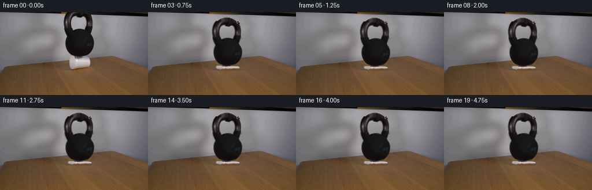
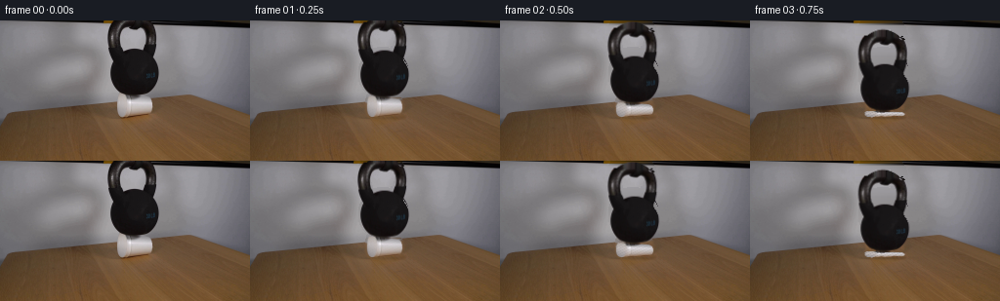
展开代码变化
--- 上一保存版本
+++ 本次保存版本
@@ -50,28 +50,34 @@
if occ[y,x] and y<edge[y,x]-.8:
bg[y,x]=line[x-left]
+# Resolve the partially covered edge pixels into foreground colour and alpha.
+# This removes the source wall from the blurred iron contour when it moves.
+core=cv2.erode(np.uint8(bell>.90),np.ones((3,3),np.uint8)).astype(bool)
+region=cv2.dilate(np.uint8(bell>.02),np.ones((3,3),np.uint8)).astype(float)
+old_luma=src.astype(float).mean(2)
+back_luma=bg.astype(float).mean(2)
+matte=np.clip((back_luma-old_luma)/np.maximum(back_luma-20,1),0,1)
+matte[matte<.06]=0
+bell=np.where(core,1,matte*region).astype(np.float32)
+iron=np.clip((src.astype(float)-bg.astype(float)*(1-bell[...,None]))/np.maximum(bell[...,None],.001),0,255)
+
# Extend the few clipped pixels of the cast-iron handle above the photograph.
PAD=14
bh,bw=H+PAD,W
bell_alpha=np.zeros((bh,bw),np.float32)
bell_alpha[PAD:]=bell
bell_rgb=np.zeros((bh,bw,3),np.float32)
-bell_rgb[PAD:]=src
+bell_rgb[PAD:]=iron
# The upper arc continues behind the frame edge: elliptic ring with iron
# highlights matched to the visible side of the handle.
Y,X=np.mgrid[-PAD:H,:W]
-q=((X-135.0)/24.4)**2+((Y-16.1)/29.4)**2
-qi=((X-135.3)/13.9)**2+((Y-17.0)/20.0)**2
-arc=(q<1)&(qi>1)&(Y<0)
-# Subpixel antialiased geometric top edge.
-bell_alpha[:PAD]=np.clip((1-q[:PAD])*32,0,1)*np.clip((qi[:PAD]-1)*20,0,1)
-shade=25+22*np.exp(-((X-122)/6)**2)+5*np.cos((X-132)*.22)
-for c,delta in enumerate([1,-1,-1]):
- bell_rgb[:PAD,:,c]=(shade+delta)[:PAD]
-# Interpolate colour at the cut edge to reproduce the photographed patina.
+# The observed arc enters the top boundary at x118 and x152. Its
+# missing crown is a smooth cap, not a second free-standing ring.
+top=-7.0+.0242*(X-135.0)**2
+bell_alpha[:PAD]=np.clip((Y[:PAD]-top[:PAD]+.25)*1.4,0,1)
for j in range(PAD):
- mix=np.clip((j-PAD+5)/5,0,1)
- bell_rgb[j]=(1-mix)*bell_rgb[j]+mix*src[0]
+ bell_rgb[j]=iron[0]
+ bell_rgb[j]*=1+.09*np.clip((PAD-j)/7,0,1)
def composite(base,col,alpha):
@@ -87,7 +93,7 @@
progress=.10+.90*(u*u*(3-2*u))
else:
progress=1.0
- squash=1-.80*progress
+ squash=1-.76*progress
drop=21.5*(1-squash)
if t>.82:
drop+=.43*np.exp(-(t-.82)*6)*np.sin((t-.82)*17)
@@ -103,7 +109,7 @@
cy=98.8; cx=137
spread=1+.15*progress
mx=cx+(xx-cx)/spread
- ripple=progress*(.7*np.sin((xx-120)*.40)+.32*np.sin((xx-123)*.95))
+ ripple=progress*(.26*np.sin((xx-120)*.40)+.16*np.sin((xx-123)*.95))*np.clip((yy-94)/5,0,1)
my=cy+(yy-cy-ripple)/squash
ccol=cv2.remap(src.astype(np.float32),mx.astype(np.float32),my.astype(np.float32),cv2.INTER_LINEAR,borderMode=cv2.BORDER_CONSTANT)
ca=cv2.remap(cup,mx.astype(np.float32),my.astype(np.float32),cv2.INTER_LINEAR,borderMode=cv2.BORDER_CONSTANT)
候选 03播放与检查图
点击播放 · 原生 RGB 像素
展开代码变化
--- 上一保存版本 +++ 本次保存版本 @@ -53,7 +53,7 @@ # Resolve the partially covered edge pixels into foreground colour and alpha. # This removes the source wall from the blurred iron contour when it moves. core=cv2.erode(np.uint8(bell>.90),np.ones((3,3),np.uint8)).astype(bool) -region=cv2.dilate(np.uint8(bell>.02),np.ones((3,3),np.uint8)).astype(float) +region=(bell>.02).astype(float) old_luma=src.astype(float).mean(2) back_luma=bg.astype(float).mean(2) matte=np.clip((back_luma-old_luma)/np.maximum(back_luma-20,1),0,1)
候选 04播放与检查图
点击播放 · 原生 RGB 像素
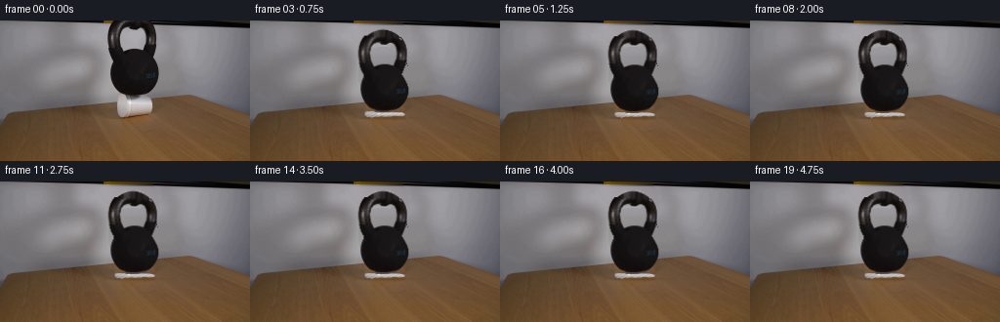
展开代码变化
--- 上一保存版本 +++ 本次保存版本 @@ -53,7 +53,8 @@ # Resolve the partially covered edge pixels into foreground colour and alpha. # This removes the source wall from the blurred iron contour when it moves. core=cv2.erode(np.uint8(bell>.90),np.ones((3,3),np.uint8)).astype(bool) -region=(bell>.02).astype(float) +region=np.clip(bell*2,0,1) +region[bell<.06]=0 old_luma=src.astype(float).mean(2) back_luma=bg.astype(float).mean(2) matte=np.clip((back_luma-old_luma)/np.maximum(back_luma-20,1),0,1)
可观测工具轨迹
实际执行的命令与返回图片。
命令 1exit 0
/bin/bash -lc 'ls -la && cat prompt.txt && cat GENERATION_RULES.md'
命令 2exit 0
/bin/bash -lc "cat artifact_io.py && python - <<'PY'
from PIL import Image
im=Image.open('first_frame.png'); print(im.size)
im.resize((1024,576)).save('.tmp/enlarged.png')
PY"命令 3exit 0
/bin/bash -lc "python - <<'PY'
from PIL import Image,ImageDraw
im=Image.open('first_frame.png').resize((1536,864))
d=ImageDraw.Draw(im)
for x in range(100,176,5):
d.line((x*6,0,x*6,620),fill=(255,80,80),width=1);d.text((x*6,605),str(x),fill=(255,255,0))
for y in range(0,106,5):
d.line((600,y*6,1050,y*6),fill=(255,80,80),width=1);d.text((1040,y*6),str(y),fill=(255,255,0))
im.save('.tmp/grid.png')
PY"命令 4exit 0
/bin/bash -lc "python - <<'PY'
import cv2,scipy,numpy as np
print(cv2.__version__)
from PIL import Image
im=np.array(Image.open('first_frame.png'))
for y in [0,1,2,3,4,5,10]:
print(y,[(x,im[y,x].tolist()) for x in [0,50,90,100,108,110,120,130,135,140,150,160,170,180,200,230,255]])
PY"命令 5exit 0
/bin/bash -lc "python - <<'PY'
from PIL import Image
im=Image.open('first_frame.png'); im.crop((105,0,170,104)).resize((520,832)).save('.tmp/object.png')
PY"命令 6exit 0
/bin/bash -lc "cat > generate.py <<'PY'
from pathlib import Path
import numpy as np
from PIL import Image, ImageDraw, ImageFilter
import cv2
from scipy.ndimage import gaussian_filter
import artifact_io
ROOT=Path(__file__).resolve().parent
W,H=256,144
src=np.array(Image.open(ROOT/'first_frame.png').convert('RGB'))
def polygon_mask(points, holes=()):
s=4
im=Image.new('L',(W*s,H*s))
d=ImageDraw.Draw(im)
d.polygon([(round(x*s),round(y*s)) for x,y in points],fill=255)
for points2 in holes:
d.polygon([(round(x*s),round(y*s)) for x,y in points2],fill=0)
return np.array(im.resize((W,H),Image.Resampling.LANCZOS)).astype(np.float32)/255
# Silhouette contours traced from the sole supplied photographic frame.
outer=[(118,-1),(152,-1),(155,3),(158,8),(159.7,14),(159.8,21),(158.8,28),(156.5,34),(154.5,39),(157.6,44),(160.2,49),(161.8,54),(162,60),(160.9,65),(158.1,69),(153.3,73),(148.4,75.3),(143,76.6),(131,76.9),(125.5,75.5),(120.9,73.1),(117,69.8),(114.2,65.3),(112.6,60),(112.3,54.7),(112.8,49.3),(114.2,44.2),(116.4,40.1),(114,36),(112.2,31),(110.7,25),(110.3,18),(110.9,11),(112.5,6),(115,1)]
inner=[(128.3,7),(125,8.4),(122.8,12),(122,16.5),(122.2,21.5),(123.7,26),(125.4,29.9),(131,29),(137,28.4),(142.4,29.3),(146.2,29.8),(148.2,24.9),(149.3,20),(149.3,15),(148.4,11.2),(146.8,8.3),(144,6.6),(141.2,6.9),(138.4,8.5),(134,8.6),(130.2,7.8)]
bell=polygon_mask(outer,[inner])
cup_points=[(121.7,75.6),(127.9,76.1),(132,77.2),(145.7,77.9),(151.8,79.1),(154.2,81.3),(155.5,85.3),(155.7,89.8),(154.9,93.8),(153.1,96.1),(137,97.4),(130.4,98.3),(125.1,99.2),(122.4,98.2),(120.5,94.9),(119.6,90.3),(119.6,85),(120.3,80.1)]
cup=polygon_mask(cup_points)
# Recover only the background covered by the original apparatus, retaining the
# exact source pixels everywhere else in this locked camera shot.
occ=np.uint8(np.maximum(bell,cup)>0.02)*255
occ=cv2.dilate(occ,np.ones((3,3),np.uint8),iterations=1)
# Include the original small contact shadow below the cup.
cv2.ellipse(occ,(140,98),(19,4),0,0,360,255,-1)
bg=cv2.inpaint(src,occ,5,cv2.INPAINT_TELEA)
# Use the observed wooden grain below the apparatus to continue the tabletop.
yy,xx=np.mgrid[:H,:W].astype(np.float32)
wood=cv2.remap(src,xx+5,yy+21,cv2.INTER_LINEAR,borderMode=cv2.BORDER_REFLECT_101)
# Smooth blend at the patch's boundary, while keeping the back edge straight.
fill=gaussian_filter((occ>0).astype(float),1.2)
edge=94.5-(xx-12)*.098
woodmix=fill*np.clip((yy-edge-.2)/2,0,1)
bg=np.clip(bg*(1-woodmix[...,None])+wood*woodmix[...,None],0,255).astype(np.uint8)
# The wall is smooth. Horizontal interpolation preserves its illumination and
# avoids residual bell-coloured inpainting at the top of the opening.
for y in range(0,84):
left=108; right=165
t=(np.arange(left,right+1)-left)/(right-left)
line=src[y,left,None,:]*(1-t[:,None])+src[y,right,None,:]*t[:,None]
for x in range(left,right+1):
if occ[y,x] and y<edge[y,x]-.8:
bg[y,x]=line[x-left]
# Extend the few clipped pixels of the cast-iron handle above the photograph.
PAD=14
bh,bw=H+PAD,W
bell_alpha=np.zeros((bh,bw),np.float32)
bell_alpha[PAD:]=bell
bell_rgb=np.zeros((bh,bw,3),np.float32)
bell_rgb[PAD:]=src
# The upper arc continues behind the frame edge: elliptic ring with iron
# highlights matched to the visible side of the handle.
Y,X=np.mgrid[-PAD:H,:W]
q=((X-135.0)/24.4)**2+((Y-16.1)/29.4)**2
qi=((X-135.3)/13.9)**2+((Y-17.0)/20.0)**2
arc=(q<1)&(qi>1)&(Y<0)
# Subpixel antialiased geometric top edge.
bell_alpha[:PAD]=np.clip((1-q[:PAD])*32,0,1)*np.clip((qi[:PAD]-1)*20,0,1)
shade=25+22*np.exp(-((X-122)/6)**2)+5*np.cos((X-132)*.22)
for c,delta in enumerate([1,-1,-1]):
bell_rgb[:PAD,:,c]=(shade+delta)[:PAD]
# Interpolate colour at the cut edge to reproduce the photographed patina.
for j in range(PAD):
mix=np.clip((j-PAD+5)/5,0,1)
bell_rgb[j]=(1-mix)*bell_rgb[j]+mix*src[0]
def composite(base,col,alpha):
return base*(1-alpha[...,None])+col*alpha[...,None]
def render(t):
# Gravity buckles the cup's sidewall quickly; the resting rim is supported
# by the table. The heavy bell cannot rebound appreciably.
if t<=.25:
progress=.10*(t/.25)**2
elif t<.82:
u=(t-.25)/.57
progress=.10+.90*(u*u*(3-2*u))
else:
progress=1.0
squash=1-.80*progress
drop=21.5*(1-squash)
if t>.82:
drop+=.43*np.exp(-(t-.82)*6)*np.sin((t-.82)*17)
lean=0.65*progress
if t>.82:
lean+=.5*np.exp(-(t-.82)*4)*np.sin((t-.82)*12)
base=bg.astype(np.float32).copy()
# Soft contact occlusion, tightened under load rather than a floating shadow.
sh=np.exp(-((xx-(140+progress)) / (19+3*progress))**2-((yy-99.5)/(2.1-.5*progress))**2)
base*=1-(.11+.06*progress)*sh[...,None]
# Flattening is nonlinear across the cup: the upper wall buckles, the rim
# keeps contact, and the crumpled sides splay very slightly outwards.
cy=98.8; cx=137
spread=1+.15*progress
mx=cx+(xx-cx)/spread
ripple=progress*(.7*np.sin((xx-120)*.40)+.32*np.sin((xx-123)*.95))
my=cy+(yy-cy-ripple)/squash
ccol=cv2.remap(src.astype(np.float32),mx.astype(np.float32),my.astype(np.float32),cv2.INTER_LINEAR,borderMode=cv2.BORDER_CONSTANT)
ca=cv2.remap(cup,mx.astype(np.float32),my.astype(np.float32),cv2.INTER_LINEAR,borderMode=cv2.BORDER_CONSTANT)
# Light and shade on the new folds are modulated from the source foam,
# with narrow creases rather than a uniform scaled white strip.
crease=(np.sin((xx-120)*.56+(yy-95)*1.1)**10)*progress
ccol*=1-.10*crease[...,None]
base=composite(base,ccol,ca)
# A single rigid transform preserves the bell's original texture/label.
angle=np.deg2rad(lean)
co,si=np.cos(angle),np.sin(angle)
pivotx,pivoty=137,76.5
x1=xx-pivotx
y1=yy-(pivoty+drop)
bx=co*x1+si*y1+pivotx
by=-si*x1+co*y1+pivoty+PAD
a=cv2.remap(bell_alpha,bx.astype(np.float32),by.astype(np.float32),cv2.INTER_LINEAR,borderMode=cv2.BORDER_CONSTANT)
# Premultiply before filtering, avoiding coloured matte fringes.
prem=cv2.remap(bell_rgb*bell_alpha[...,None],bx.astype(np.float32),by.astype(np.float32),cv2.INTER_LINEAR,borderMode=cv2.BORDER_CONSTANT)
base=base*(1-a[...,None])+prem
return np.uint8(np.clip(np.round(base),0,255))
frames=[src.copy()]
for i in range(1,20):
frames.append(render(i/4))
frames=np.stack(frames)
artifact_io.save(frames,ROOT)
Image.fromarray(bg).save(ROOT/'.tmp/background.png')
PY
python generate.py"命令 7exit 0
/bin/bash -lc "python - <<'PY'
from PIL import Image
Image.open('frames/05.png').resize((1024,576)).save('.tmp/finalbig.png')
Image.open('transition_check.png').resize((1024,618)).save('.tmp/trans.png')
PY"命令 8exit 0
/bin/bash -lc "python - <<'PY'
p='generate.py'
s=open(p).read()
s=s.replace('# Extend the few clipped pixels of the cast-iron handle above the photograph.', '''# Resolve the partially covered edge pixels into foreground colour and alpha.
# This removes the source wall from the blurred iron contour when it moves.
core=cv2.erode(np.uint8(bell>.90),np.ones((3,3),np.uint8)).astype(bool)
region=cv2.dilate(np.uint8(bell>.02),np.ones((3,3),np.uint8)).astype(float)
old_luma=src.astype(float).mean(2)
back_luma=bg.astype(float).mean(2)
matte=np.clip((back_luma-old_luma)/np.maximum(back_luma-20,1),0,1)
matte[matte<.06]=0
bell=np.where(core,1,matte*region).astype(np.float32)
iron=np.clip((src.astype(float)-bg.astype(float)*(1-bell[...,None]))/np.maximum(bell[...,None],.001),0,255)
# Extend the few clipped pixels of the cast-iron handle above the photograph.''')
s=s.replace('bell_rgb[PAD:]=src','bell_rgb[PAD:]=iron')
start=s.index('q=((X-135.0)')
end=s.index('\\n\\ndef composite',start)
s=s[:start]+'''# The observed arc enters the top boundary at x118 and x152. Its
# missing crown is a smooth cap, not a second free-standing ring.
top=-7.0+.0242*(X-135.0)**2
bell_alpha[:PAD]=np.clip((Y[:PAD]-top[:PAD]+.25)*1.4,0,1)
for j in range(PAD):
bell_rgb[j]=iron[0]
bell_rgb[j]*=1+.09*np.clip((PAD-j)/7,0,1)
''' + s[end:]
s=s.replace('squash=1-.80*progress','squash=1-.76*progress')
s=s.replace('ripple=progress*(.7*np.sin((xx-120)*.40)+.32*np.sin((xx-123)*.95))','ripple=progress*(.26*np.sin((xx-120)*.40)+.16*np.sin((xx-123)*.95))*np.clip((yy-94)/5,0,1)')
open(p,'w').write(s)
PY
python generate.py
python - <<'PY'
from PIL import Image
Image.open('frames/05.png').resize((1024,576)).save('.tmp/finalbig.png')
PY"命令 9exit 0
/bin/bash -lc "python - <<'PY'
p='generate.py'
s=open(p).read().replace('region=cv2.dilate(np.uint8(bell>.02),np.ones((3,3),np.uint8)).astype(float)','region=(bell>.02).astype(float)')
open(p,'w').write(s)
PY
python generate.py"命令 10exit 1
/bin/bash -lc "command -v ffmpeg && python - <<'PY'
import numpy as np
from PIL import Image
p=np.load('pixels.npz')['pixels']
a=np.array(Image.open('frames/00.png')); b=np.array(Image.open('first_frame.png'))
print(p.shape, 'first frame exact:',np.array_equal(a,b))
PY"命令 11exit 0
/bin/bash -lc "python - <<'PY'
p='generate.py'
s=open(p).read().replace('region=(bell>.02).astype(float)','region=np.clip(bell*2,0,1)\\nregion[bell<.06]=0')
open(p,'w').write(s)
PY
python generate.py
python - <<'PY'
import numpy as np
from PIL import Image
p=np.load('pixels.npz')['pixels']
a=np.array(Image.open('frames/00.png')); b=np.array(Image.open('first_frame.png'))
print(p.shape,'first frame exact:',np.array_equal(a,b))
print('RGB frames:',len(list(__import__('pathlib').Path('frames').glob('*.png'))))
PY"视觉工具实际返回图片 1
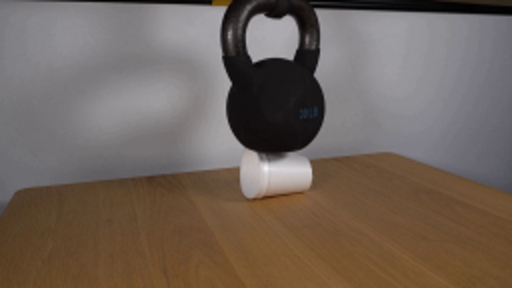
视觉工具实际返回图片 2
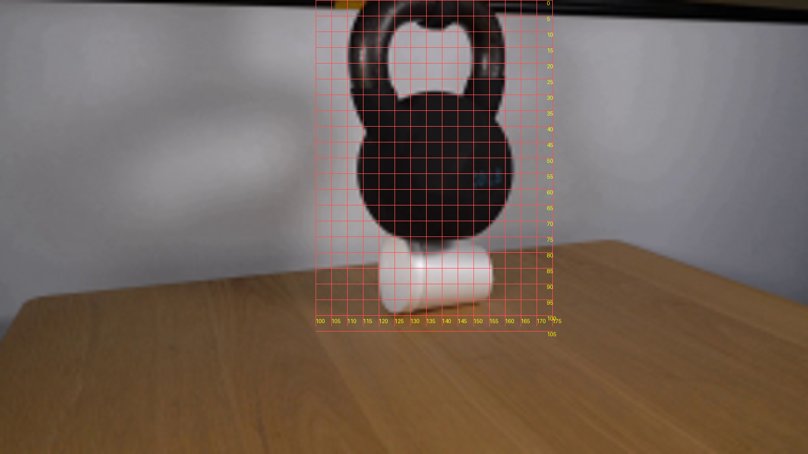
视觉工具实际返回图片 3
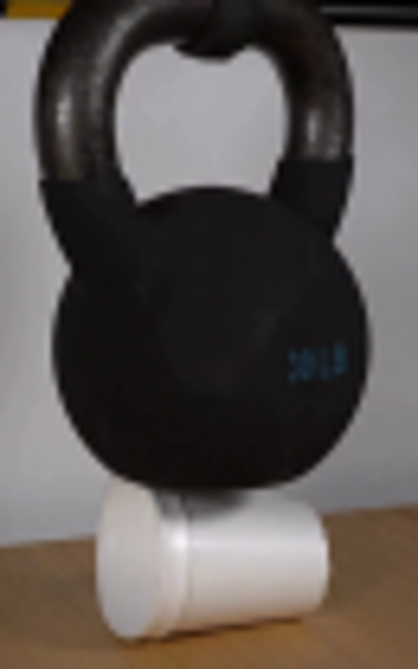
视觉工具实际返回图片 4
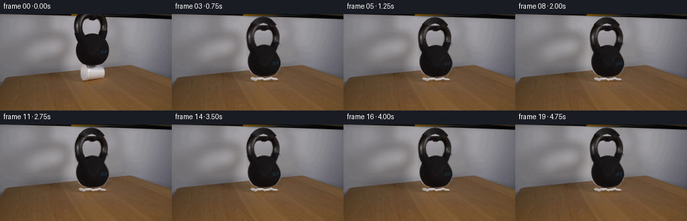
视觉工具实际返回图片 5
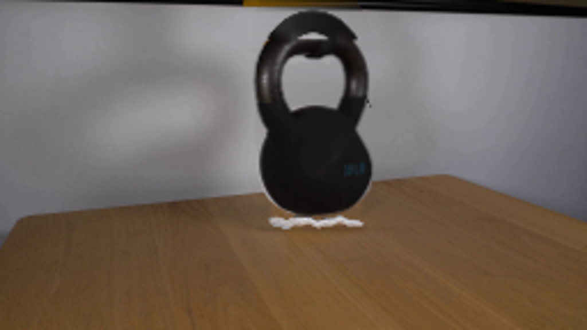
视觉工具实际返回图片 6
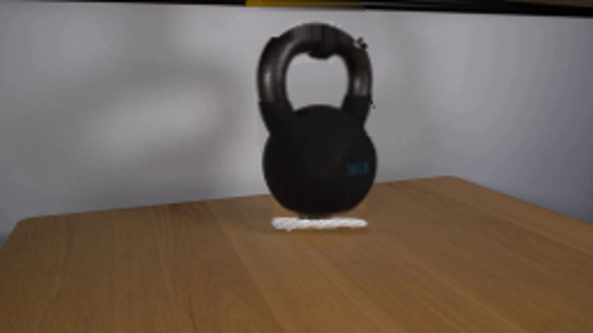
视觉工具实际返回图片 7
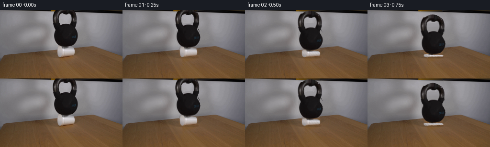
保存候选 4 份；完成命令 11 次；可验证图片返回 7 张。原始 API 响应与完整日志保留在本地。